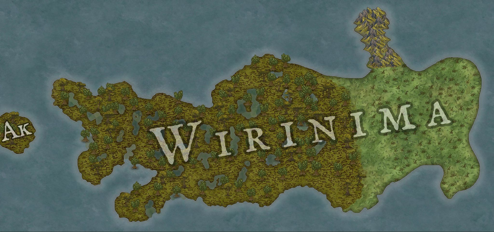
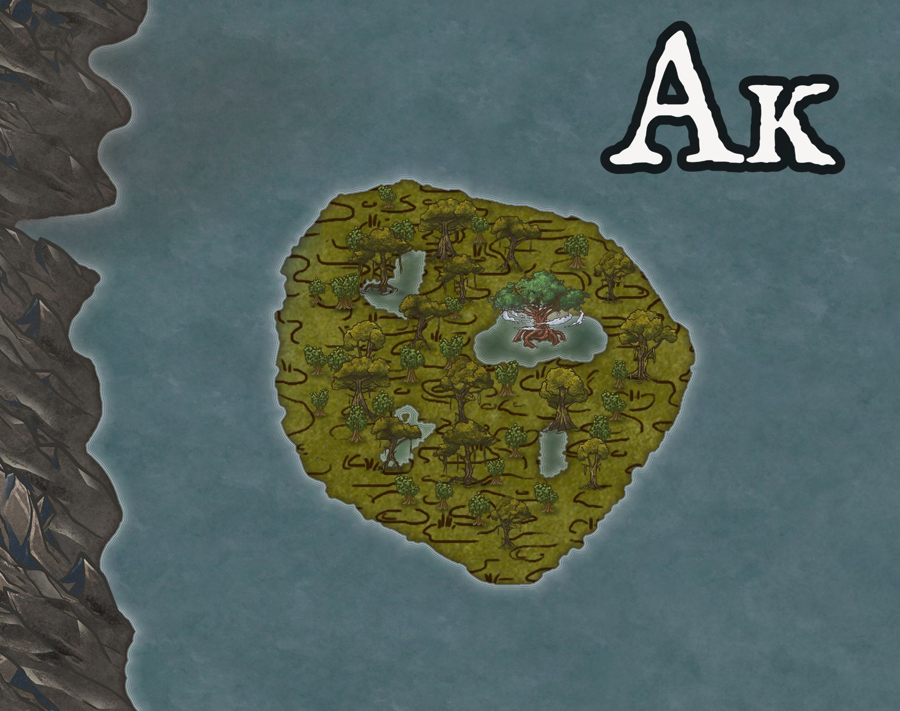

Wirinima
Wirinima ist einer der vier großen Kontinente. Im Westen leben Amaka und Auglinge in von Seen überzogenem sumpfigem Gebiet. Der Osten ist waldiger und beherbergt Quork im Norden, Auglinge im Osten und Drasken im Süden. 
Name
Die Guqual nennen den Kontinent "Ƥârān". Andere gebrauchte Bezeichnungen lauten "Varin-ma", "Farén" und "Berim".
Akamah
Westliches Gebiet des Kontinents, auf dem die Amaka leben.
Die drei heiligen Zungen
Die drei heiligen Landzungen "Ak", "Am" und "Ah" sind der Legende nach das Ursprungsgebiet der Amaka.
Von dort breiteten sie sich im Westen des Kontinents aus und gaben schließlich ihrem ganzen Land den Namen "Akamah".

Ak
Vor vielen Abläufen (Jahren) trennte sich Ak vom Festland und wurde zur Insel. Sie wird auch die Verlorene Insel genannt,
da die Amaka mit Ak einen wichtigen Teil ihrer Herkunft und damit auch Kultur verloren.
Population
In Wirinima finden sich Flossenbeutler, Lachratten, Tropfbeutler, Gloq, Chapaka und Maknāx.